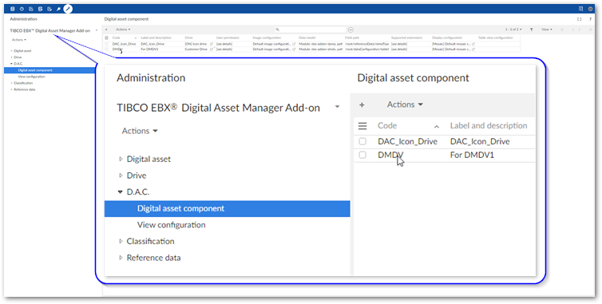
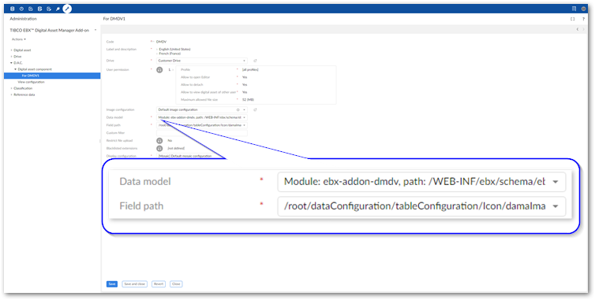
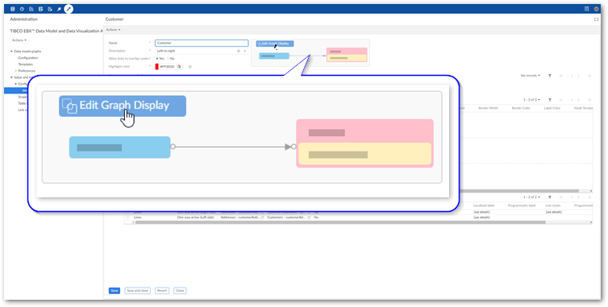
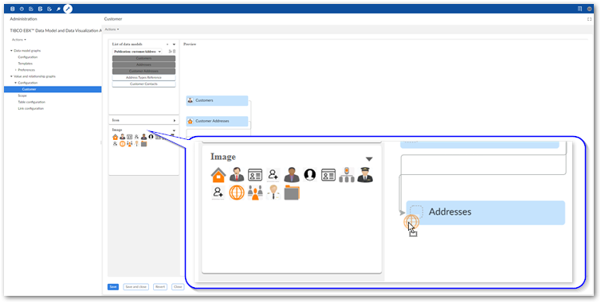
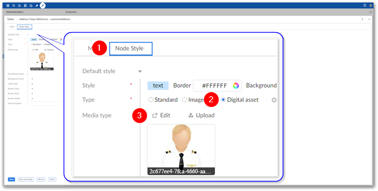

One of the configurable styles for data value nodes is the icon displayed on the node. The add-on allows you to supply a URL, use a provided icon, or use an image stored as a digital asset. To use a digital asset, you must have the TIBCO EBX® Digital Asset Manager Add-on installed and configured. The following sections show you how to adjust existing configuration settings in the EBX® Digital Asset Manager Add-on.
If you have not already configured a Drive and a D.A.C. in the TIBCO EBX® Digital Asset Manager Add-on, you can view its product documentation for instructions on completing these tasks.
The EBX® Digital Asset Manager Add-on requires that a data model include a specific field data type to attach assets managed by the add-on. The TIBCO EBX® Data Model and Data Visualization Add-on already includes this field in its technical model. The only configuration required in the EBX® Digital Asset Manager Add-on is to specify that a D.A.C. points to the EBX® Data Model and Data Visualization Add-on's data model and field.
To configure the D.A.C.:
Open the D.A.C. you want to use to link a Drive with a data value graph's table configuration:
Select the Administration panel and navigate to TIBCO EBX® Digital Asset Manager Add-on.
Open the D.A.C. group and double-click to open a Digital asset component.

Create a link with the EBX® Data Model and Data Visualization Add-on Media type field by setting the following fields:
Data model: choose Module: ebx-addon-dmdv, path: /WEB-INF/ebx/schema/ebx-addon-dmdv-configuration.xsd from the menu.
Field path: choose /root/dataConfiguration/tableConfiguration/Icon/damaImage from the menu.

Save and close the D.A.C.
The assets contained in the Drive linked by the D.A.C. are now available to use for icons on graph nodes. The next section describes how to add these assets to nodes.
You can add one asset to each graph node. The asset displays in the same format as icons and other custom images.
To add an asset to a graph node:
Using the graphical editor:
From the Administration panel, navigate to TIBCO EBX® Data Model and Data Visualization Add-on > Value and relationship graphs > Configuration.
Open a configuration and select Edit Graph Display.

Drag an asset from the Image palate and drop on the desired node.

Save your changes.
Using the standard configuration options:
From the Administration panel, navigate to TIBCO EBX® Data Model and Data Visualization Add-on > Value and relationship graphs.
Open a table configuration using one of the following methods:
Select Table configuration and double-click to open the desired configuration.
When viewing a graph configuration select Edit Graph Display and double-click a node.
When viewing a graph configuration double-click the desired entry under Tables.
Configure the following style options:

1) | Select the Node style tab. |
2) | Set the Type option to Digital asset. |
3) | Use the Edit option to select an existing asset for the node. Alternatively, use the Upload option to upload and attach a new asset. For more details on using these options, see the TIBCO EBX® Digital Asset Manager Add-on's product documentation. |
Save your changes.
When users generate a graph from this configuration, the nodes display the attached digital assets.